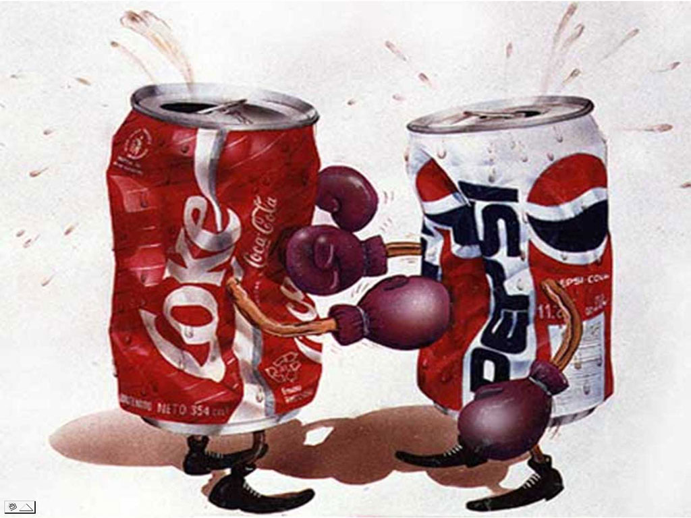
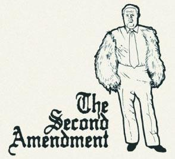
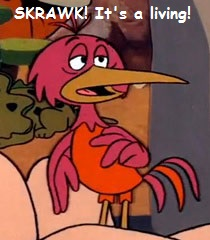

|
Various Issues in one minute each!! -- In Which I Flail My Arms Pathetically -- An Intense, Over-Bearing Manifesto or Lengthy, Insulting Tirade -- Q: What are your qualifications?: Nothing :D Q: What do you know about global economics?: Nothing :D Q: Are you in politics?: No, I just found the website and filled it in as a "hobby for God." I have a wife and kids at home and I work at a plant, if we're cool. More FAQ Skip down to the Issues |
"Both after the same chick," kind of, you know? |
|||||||||||||||
|
More Slogans and Things:
Skip down to the Issues
Skip to the Table of Contents |
(The plasma responds to the mood, is the idea of the movie.) |
|||||||||||||||
|
I have a wife and kids; let's "play nice." I have this objective in my life these last however many years, to "like the guy even though I don't like his politics." You can't teach a cat to quack. You take the good, you take the bad, and there you have the facts of life. The Facts. Of. Life.
Table of Contents (You Already Hate Me and Think I'm a Pretentious Jerk)
| ||||||||||||||||
|
It's a free country. There's going to be people that don't belong to your religion, and don't care to. People who belong to religions you don't care about. There's going to be gays. Whatever. There's going to be one of everyone. They all want to be treated well, and you're the jerk if you can't bother. Just get used to it, you know? Just so personally, I think the machinery needs it. I think God made us complementary to one another, as teacher-learners. If you’re like me, you find yourself thinking (on big issue after big issue):
The world is beautiful for its variety. I learned everything I’ve got from people not like me. I don't like systems that can't correct themselves. Are you super conservative about enjoying cake? An area to be as strict as you can? Are you super liberal about your ability to fly? Figure, hey, why not, I'll give it a whack? We need a variety of eyes on it to get good stuff out of the machinery. This probably sounds hokey, but I'm going to say it: calling people stupid is bad for the works. There's no such thing as stupid. They're just new at this or that; they need something explained better. Sometimes the other fellow will freak out and windmill at you. No! Gravity is down. That's what everyone thinks, on every side. So not just every issue really has two sides with merit, if you see what I mean. Does anyone else find it basically impossible to get other people to listen unless you get all bent out of shape? Well, I do. I hate that. The only thing that ever works is to start with some compliments, to show you're there to learn. "You gotta bring cookies." I think we're all such good people at heart, we've gone overboard trying to find a bad guy. Well, we're all the bad guy at times, ain't it? Everyone's way off about everyone. Most folks are just plain nice. 'Cancel politics,' a little, you know? This is "a big planet." 
You may want to open an hateful e-mail so you can yell at me as we go. Works way better than Communism
Gigantic. Just gigantic, way huge. A personal assistant/super-cop for every man, woman and child. Just one guy, namely you, has to work 20 hours a day while everyone else laughs at you. No, tiny, total anarchy. The powerful using the weak as serfs; armed robbery in the open streets. No, somewhere in between. "Not much guidance there," I guess, but the extremes are pretty useless too. [See Kill the Robots] [See Internalized Economies]
... are not part of the super-rich. They shouldn't be taxed out of business. I know small business owners, and they're middle class and in debt. "The Admission Fee" I think of taxes as the admission fee to an amusement park. If you don't like the prices, or the way they're being spent, hey, say something. But there's going to be a fee. On the one hand, it's not fair for corporations to write their own laws. On the other, these folks are huge players in the economy, and they have a lot of employees and stockholders. They need to be heard about this stuff. *shrug* Instant Run-off Voting is even better than Voting Classic! Yay for it. (See also the "real vs. fake" page) You rank the candidates, and if your first-choice candidate doesn't get a majority, your vote falls off to your second choice, third choice, and so on. That way, your vote always goes to your preferred candidate. They're already using this successfully in Australia for the Parliament, so you know it's good. Crikey! See also instantrunoff.com See also fairvote.org You've probably heard the concept of the "full life raft." Like, we've got serious unemployment already with the robots. Mexico needs to get its internalized economy going so people will want to stay. In the meantime...
See also Over-Population See also Internalized Economies So what's the problem, we can't balance a checkbook here? Some kinda checkbook problems? Actuarial tables, tap-a-tap-a-type-type? Sounds like you need an accountant? Increase income, cut spending? Try Mark Minglebury, 804 Taft Ave, he's professional and affordable. "So what's the problem, we can't balance a checkbook here? Some kinda checkbook problems?" If we need to, I guess we'll probably set up tax disincentives for having more than two kids? Same graph:
I don't know anything really about economics, to be honest. :D But, I have this idea that every country can produce its own goods and services, and just not trade much with the others. Like "start your own" Local Pepsi© franchise or whatever. I think that would create a lot of jobs, and help stabilize all the countries that can't compete in the global market. Also, turn off the robots, if I didn't mention, is a recurring theme. Measure success in business primarily as jobs created, not just by profit. I don't know anything about that, really :P Ask someone else. Ron Paul is smart, and he says it is important. Ask that guy. Or, "Capitalism Rules at Everything Except [...]" Socialized medicine... well, no... Come on, people are going to take advantage of that, you know? Free lungs for crack-heads? Infinite hearts for the burger man? On the other hand, the robots are taking all the middle class jobs, so... How does an average family get covered? I mean, the average guy is going to sleep [3/4]-crazy trying to figure out how to keep his kids safe, you know? It's not some American dream, it's this living nightmare... If you see all that... We ought to, I don't know, have common sense about it all, you know? Price-fix the common stuff (like they do the corn or the dairy), so life isn't completely terrifying to us small-time families... But then probably "Some kind of deal where if you want coverage for your bad habit, you gotta pay a little more", or however they call it... I don't think wealthier folks really understand how awful and terrifying it is to try to raise kids when you're one medical emergency away from bankruptcy. Without middle class jobs, you are going to have a revolt if you can't give parents health care. (Turn off the robots.) What, you don't like gun controllers? Totally fun, for like with that game, Duck Hunt? Naw, I'm fooling around. But seriously, we have a right to armed bears, it's in the Bill of Rights.  It's my stuff, and my family, and I'm apt to have a gun to protect it. "If you outlaw guns, only guns will have..." Wait, that's not it. Also, hey, it's a hobby for some people. You don't have any hobbies people don't like? It's like how there will always be drunk driving deaths, but we don't ban alcohol? It's very sad, but it's already against the law. We support, you know, background checks and waiting periods and fun stuff like that. Whatever's clever. Maybe those fingerprint things? While I'm in the neighborhood... Folks should also recognize (if they haven't) that the arms industry has a vested interest in cultivating war. Well, they do. Uh-huh. Do to. It's like... people are going to have the cars they want. But, we're going to run out of fossil fuels, and we need that for the heavy work trucks. Anyways, it's bad for the environment, and I have kids. It doesn't matter what caused it; it matters how we're going to fix it. Let's please remember that another name for "a natural correction" is "a huge disaster." Until everything (the economy, the environment...) is stabilized, we ought to think like it's a kind of "war times." Have a little team spirit! Well worth it, the conservative thing to do. "Waste not, want not." Let's not get wimpy all of a sudden, friend! (We support the full mixed-source energy grid [wind, big solar, nuclear, geothermal, clean coal, whatever's clever], carbon sinks, and all this good sustainability tech. We should also be warning folks on the coasts, getting plans in place for the bad storms.)
For serious? You're wanting to tell me what type of food I can eat? In my own home?
Seriously, that's this idea you kicked around? Seemed like a winner, I take it?
Respect that everybody's working for the week-end, consider it a Prohibition-era thing, and just drop it. No, no, you're wrong: just drop it. Pot never killed anyone; it helps sick folks. Makes good cupcakes and twine. Good with music and cheese puffs. What's the beef, Chief? See [Mandatory Marijuana .com Of course, being sober gets a bad rap. Got to keep the engine clean, at least. Nope. One-world government sounds like a bad idea. We do have global concerns, and need global conferences and such, but I fear centralized, corrupt power and the loss of autonomy. The Constitution favors a limited-"style" government. Fiction is a bad way to do philosophy. Everyone sides with the hero of the story. Ayn Rand is great on one side of the subject, but just that side. Don't get me wrong, I like individualism. Dreams are good. Ayn Rand's work helped us find the flaw with Communism. It's fine to want a big slice of the pie; a little bit of fancy for yourself, hey :D But, individualism isn't going to protect the community from an individual, and some guys are jerks, am I wrong. "We're doing a whole big thing here." That's 'God's money,' it's for building the works. ;D We need super-man business leaders who are "hostly," who are in it to create jobs. The trickle down is broken because of the robots. Thank goodness for the unions, but also for checks and balances. It's a thing where people get a little overboard sometimes about whatever club they're in, but it's still good that it's there. The unions made life livable in this country with OSHA and all that stuff.
My idea was "feedlot radios," play them some nice music that they like. The research shows it's good for them and they like it. Healthier for everyone, right? Come on, don't be a stick-in-the-mud, ham-pops! :D "SKRAWK! It's a living!", as the bird said. If God gives you dominion or "stewardship" over something, you had better do a good job! I think we should try to treat farm-lot animals like a sort of a co-worker, a fuzzy farm friend. "It's gotta be proper," as they say. "Vegan factory farming," let's call it. Farm radios, close-quarters laws, zonked-out slaughter, that kind of thing.  "Skrawk! It's a living!" - The bird from The Flinstones Islam means 'peace,' and most Muslims are every day, hard-working, moral people. Let's not let their Angry Young Men take their religion. As a Christian sort of a guy, I hope the folks will learn "sales", "seed-tending." You just can't prove anything with violence. It's an "own-goal." What's this all been about? The creator of the universe's name is Mike; no, it's Dan; how dare you to call the guy Mike; the heck you say, it's Steve. It's going to have to be a two-state solution. Everyone has a claim, no one's backing down. "Win-Win" - "Lookie, kids, unusual people!" If they like it, and they're not too demanding, hey. "Ain't like I'm any better..." Yay, whacky variety! Why do you want to have everyone in the world look and act just like you? Doesn't that sound, I don't know, boring? I mean, do your thing, you know? I avoid, y'know, the roll-around-in-a-bag-of-rusty-nails-and-lemons crowd :P Not everything is for everyone. Or I think like, "is a sandwich better, or a soup?" Well, if they cancel either one, I'm going to cry! The question is wrong. Some 'Closing Thoughts' Type of Thing... We're just people. We're the mere Earthlings that get this planet - let's not self-destruct now. Think like we're trying to sell this planet to some aliens, take this show on the road. Let's just 'leave it all' sort of, turn the thing into a real shin-dig. We all wound up here together, and I'm sure everyone wants a seat. Me included! Let's not let people keep treating all us moderates and independents as non-players with nothing to say. We say plenty! I say we stand up for ourselves, say this is not for us. Get a little riled up, get our own thing going. | ||||||||||||||||

• Pro-1st Amendment (Free Speech)
• Pro-2nd Amendment (Defense)
• Pro-Sustainability
• Pro-Marijuana  • Anti-Robot / Pro-Job
• Pre-Natal Incubation
• Anti-Robot / Pro-Job
• Pre-Natal Incubation
• Anti-Robot / Pro-Job
• Pre-Natal Incubation